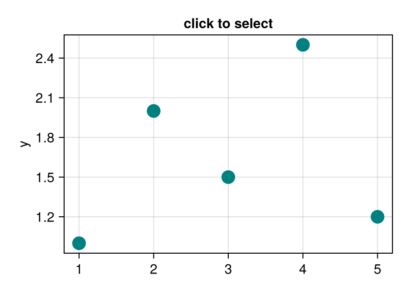

Selection round-trip
Click a point on the left, and the same sample is highlighted on the right, where it is plotted against another column. Nothing links the two plots except your code: the second masque call passes the clicked pick.index as selected=. That index is the point's position in the data you plotted, so it finds the same sample as long as both plots list the samples in the same order.
Notebook as text
Click a point on the left, and the plot on the right highlights the same sample, plotted against z.
Create the scatter and store the click with @bind pick.
begin
xs = [1.0, 2.0, 3.0, 4.0, 5.0]
ys = [1.0, 2.0, 1.5, 2.5, 1.2]
zs = [3.2, 2.1, 2.8, 1.4, 2.6]
fig_l = Figure(size = (420, 300))
ax_l = Axis(fig_l[1, 1]; ylabel = "y", title = "click to select")
s_left = scatter!(ax_l, xs, ys; color = :teal, markersize = 20)
nothing
end@bind pick masque(fig_l)
This cell responds to the click, and so does the figure below, because it uses pick too.
if isnothing(pick)
"click a point"
else
"point $(pick.index) selected"
endclick a pointPlot z for the same samples in the same order, so selected can highlight the one you clicked.
begin
fig_r = Figure(size = (420, 300))
ax_r = Axis(fig_r[1, 1]; ylabel = "z", title = "the same sample, against z")
s_right = scatter!(ax_r, xs, zs; color = :teal, markersize = 20)
held = isnothing(pick) ? Int[] : Int[pick.index]
nothing
end@bind right_click masque(fig_r; selected = held)Variations
- This example keeps only the last click. To collect indices across clicks, create a
Refin a cell that does not usepick, so it is not reset, add each click to it, and pass the collected indices asselected=on the second widget. - A slider that rebuilds the figure drops the highlight unless you pass the indices again.
- Passing a widget's own
pickback into the samemasquecall does not work; see Selection for highlighting on one figure.
Next, Linked views updates other plots from a selection.